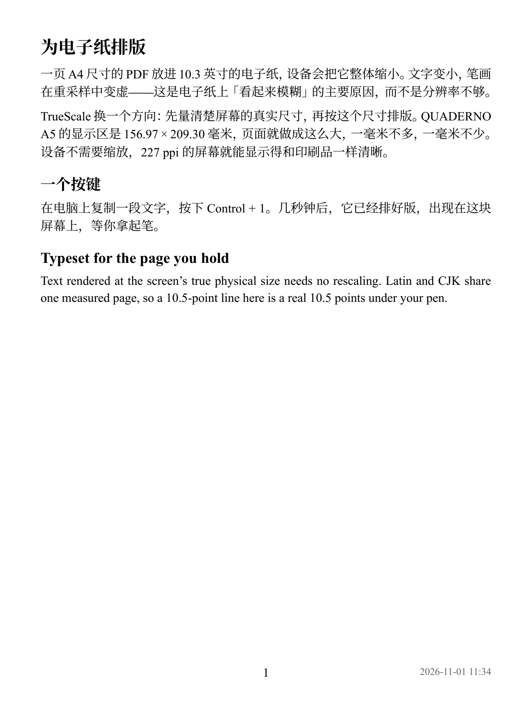

Typeset for the page you hold.
Copy text on your Mac, press a key, and it opens on your FUJITSU QUADERNO — laid out at the screen's true physical size, so it reads as sharply as print.
Version 1.2.1 · Free and open source (MIT). Apple Silicon, macOS 14 or later.

Why PDFs look blurry on e-paper
An A4 page shrunk onto a 10.3-inch screen loses sharpness in the resampling — not for lack of pixels. TrueScale measures the screen first, then sets the page to exactly that size.
Measured, not assumed
Derived from 1404 × 1872 pixels on a 10.3-inch diagonal (227.18 dpi, within 0.08% of the published 227 dpi), then checked with a ruler: a 100 mm line on the screen measures 100 mm.
No scaling on the device
Because the page is the screen, the device shows it untouched. 10.5 pt on the page is a real 10.5 pt under your pen — the same size it would be in a printed book.
Four ways in, none of them a dialog
Everything is saved to Received on the device and opens on screen. Nothing on the device is ever overwritten.
⌃1 from the clipboard
Copy any text or Markdown and press ⌃1. Named, typeset and delivered in about two seconds.
Right-click in Finder
“Send to QUADERNO” on any PDF, EPUB, Markdown or text file. Several at once, with no window.
E-books and web articles
EPUB, MOBI, FB2, HTML and WeChat articles, with a table of contents and bookmarks.
Screenshots, back to the Mac
⌃2 or one click saves the device screen — handwriting included — as PNG, JPEG or a true-size PDF into a folder you chose once.
Built to be trusted with your notes
Direct over USB or Wi-Fi
Talks to the device itself. QUADERNO PC App does not need to be open.
Read back and verified
Every upload is downloaded again and checked by SHA-256 before it counts as delivered.
Pinned device identity
The device's public key is pinned at pairing; a different key is refused, never trusted.
Device files
Browse, search, download with handwriting, upload, move and delete — deleting always asks first.
Recent deliveries
Every send, from every entry point. Failed ones keep their PDF for one-click retry.
中文 · English · 日本語
The app and its notifications in three languages, switchable in Settings.
Getting started
- Download the app and drag it into Applications.
- Connect your QUADERNO by USB. The setup guide opens by itself.
- Import Pairing, then Check. Right-click sending, ⌃1 and ⌃2 work immediately — no setup in the Shortcuts app.
- Apple Silicon Mac, macOS 14 or later.
- FUJITSU QUADERNO A5 (FMVDP51), tested. A4 (FMVDP41) works, but its page size is derived rather than measured yet.
- A pairing created once by QUADERNO PC App on the same Mac. Pairing a new device by PIN is not implemented yet.